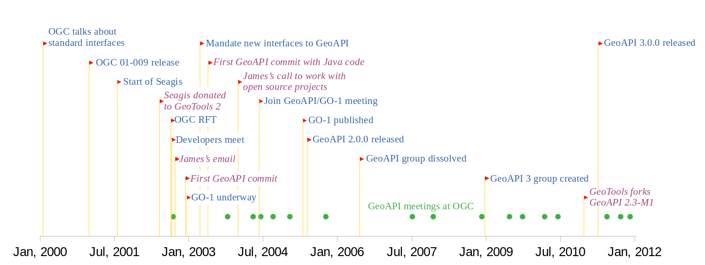

GeoAPI is a standard from the Open Geospatial Consortium (OGC)
defining Java interfaces in the org.opengis namespace.
That namespace is used for Java module names and package names,
and must be unique for avoiding collisions with other projects.
Talks at OGC about standard Java interfaces
go as far as February 2000.
The first public release of Java interfaces in org.opengis packages was in the
OpenGIS Coordinate Transformation Service Implementation Specification
(OGC 01-009) standard, published in January 12th, 2001.
That specification was edited by Computer Aided Development Corporation (Cadcorp) Ltd.
The Java sources and
IDL files
(COM and
CORBA)
were attached to the specification in a ZIP file.
While the ZIP file is no longer available on the
OGC download page,
the Java source files are still mentioned in many sections of the specification:
§2 (overview),
§3.3 (object mutability),
§3.4 (error handling),
§6.3 (Java profile),
§12 (UML representation),
§13.3 (Java) and
§14.1 (guidelines for development of conformance test).
Section §6.3 starts with the following introduction:
The Java profile is specified in the attached Java source files.
Each Java package is called “org.opengis.xx”
where “xx” is the two-character package prefix in lower case.
Section §13.3 is as below:
As there are so many Java files (one for each interface as opposed to one for each package), the Java listings have not been included here. Please see the attached Java source files and JavaDoc HTML documentation.
At the time when OGC 01-009 was published,
OGC was named The OpenGIS consortium
and its web site was hosted at http://www.opengis.org.
Consequently the use of org.opengis package name was a natural choice.
Still today, the Open Geospatial Consortium owns the opengis.org domain name
and OpenGIS is still a registered
OGC trademark.
The GeoAPI name however was not yet in use.
The Seagis project started to implement
the OGC 01-009 specification in
August 2001,
at first under its own package name for avoiding name conflicts,
later
as an implementation of interfaces published by OGC.
After ten months of development, Seagis code has been
donated to GeoTools 2
and became the GeoTools metadata, referencing and coverage core (excluding I/O) modules.
This donation brought to GeoTools its connection to org.opengis interfaces.
In September 2002, a joint presentation about Grid Coverages in Java was done at the OGC meeting in Noordwijk by Markus Müller (Degree, now lat/lon GmbH) and Martin Desruisseaux (IRD). It was followed by an informal discussion between above-cited speakers and James McGill (Geotools), Stephane Fellah (PCI Geomatic), an UCAR reprensentative and an OGC representative. Following that discussion, James McGill launched in October 2002 a call for the creation of a geospatial API. The initial proposal attracted the interest of at least five open source projects. The project was created using a CVS repository on SourceForge (now migrated on GitHub). It was then that the project assumed the name “GeoAPI”. The first commit was in December 24, 2002, nearly two years after OGC 01-009 publication.
In 2003, the OGC
CRS working group started to
transition from OGC 01-009 to ISO-19111.
During the Orléan OGC meeting in April 2003,
an informal discussion happened between Markus Müller (Degree), Ian Turton (GeoTools), Martin Daly
(editor of OGC 01-009) and Martin Desruisseaux.
It was agreed that the Java interfaces published by OGC 01-009
were not longer conform to latest UML diagrams
and that the creation of new Java interfaces will be mandated to the GeoAPI project.
The first commit
of actual Java interfaces was two months later.
The org.opengis package name was used in agreement with the decision taken during above-cited ad-hoc meeting.
While the interfaces were at first generated automatically from
API defined in
XML, they were progressively replaced by
hand-written
interfaces using OGC 01-009 as a starting point.
Even if the UMLs were different,
the design approach of OGC 01-009 was still relevant.
Meanwhile, OGC issued a Request for Technology (RFT) in summer 2002, slightly before open-source developers meet for the first time in above-cited OGC meetings. The RFT has been responded with the launch of GO-1 project in January 2003, with goals very similar to GeoAPI. James McGill made a call to work with open source projects in January 2004. A joint GO-1/GeoAPI meeting was hold at OGC in June 2004 and a GeoAPI charter has been drafted. The reported participants were:
GO-1 working group officially started in September 2004. The project joined its effort with GeoAPI, but kept the GO-1 name because it was the name used in the RFT before GeoAPI was launched. Version 1.0 of GO-1 was completed in December 2004, published in May 2005 and accompanied by a formal GeoAPI 2.0.0 release one month later.
There is traces of GO-1 and GeoAPI meetings in October 2003, April 2004, June 2004, September 2004, January 2005 and November 2005. Different organizations contributed to different parts of GeoAPI. Before mid-May 2009, the project had about 700 commits from IRD or Geomatys, about 400 commits from other GeoTools contributors, and about 150 commits from Polexis.
The GO-1 project was largely supported by the Polexis company. Its acquisition by Sys Technology in March 2004, and the change in priorities under the new owners, brought a halt to the GO-1 project, which in turn slowed development on GeoAPI. The GeoAPI working group has been dissolved in June 2006, but recreating the working group was proposed one year later and became effective in January 2009 as GeoAPI 3.0. This group took a narrower focus compared to GeoAPI 2.0, concentrating on the most stable interfaces, and putting the others — such as geometries — in a module entitled “pending”, for future consideration. GeoAPI 3.0 became an OGC standard in April 2011. This version was the first to be deployed in the Maven central repository. GeoAPI development continues since that time. From 2007 to 2022 they were more than 25 OGC meetings with presentations or motions related to GeoAPI.
The most fervent GeoAPI supporters among GeoTools core developers were the ones who brought Seagis to GeoTools.
They were the ones who attended most frequently to OGC meetings.
After those developers left the GeoTools project in May 2009, the GeoTools PMC decided to
fork GeoAPI 2.3-M1
(followed by a change
of file headers), but kept the org.opengis package name.
The decision to continue to use the org.opengis namespace for GeoTools's fork of GeoAPI has
created
conflicts with projects implementing the OGC GeoAPI 3.0 standard.
Some GeoTools users raised concerns about this conflict,
but member of the GeoTools PMC claimed that GeoAPI was a GeoTools outreach project.
To put in perspective, the figure below is a timeline with events related to GeoTools in purple and italic characters.
Events in blue characters occurred at OGC or elsewhere.
Green circles are OGC meetings having some talks about GeoAPI
or GO-1.

GeoAPI 3.0 had two minor releases for following the evolution of Java environment:
As of February 2022, OGC GeoAPI 3.0.2 is implemented by Apache SIS, implemented by OSGeo PROJ-JNI, and used by the Geospatial Integrity of Geoscience Software (GIGS) tests. Work for 3.1 or 4.0 release is in progress.